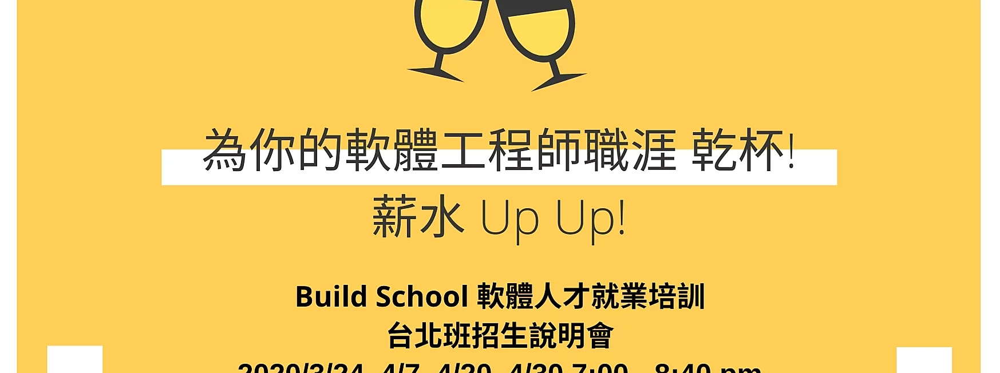
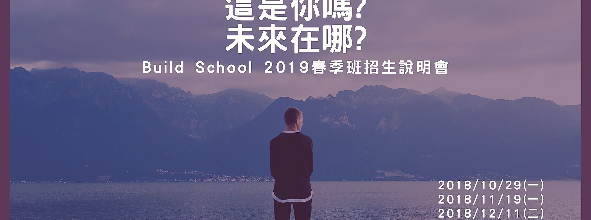

Build = 將程式碼編譯及建置成可執行的軟體
Build = 動手做
Build = 軟體開發職涯的打造者
因應數位新時代的來臨，軟體、App、IoT 、SaaS、雲端平台的應用需求大爆炸，軟體工程師的招募需求持續上升，以2016年5月求職平台的統計資料，從高科技、電商、金融、傳產、網路服務、軟體資訊、新創等各行業，台灣至少有 27,000 位軟體開發工程師的職缺，甚至日本、新加坡等軟體及App 外商也來台灣求才。
為了彌補企業求才所需技能及實務教學上的落差，我們將前進校園，幫助想搭上軟體開發及互聯網經濟這艘火箭的同學們，打造更有競爭力的職涯!

透過身經百戰的實務講師、各大企業的資深軟體工程師或CTO，帶領同學實作一個真正能運作的產品開發，解決真實世界的問題，透過專題過程中的實作，培養解決問題的能力，這裏不只是程式教學或教育訓練，學的不只是技能，而是 Learn how to learn，以因應變化多端的軟體開發技能，及自我尋找解答的能力。

除了透過打造專題作品過程，學到了技術及硬技能外，不同於一般的軟體培訓，我們更加入了簡報技巧、履歷及面試準備、以及真正軟體開發的團隊溝通及運作，這些軟實力 (Soft-Skill) 的培養，讓同學能提早做好準備，在職場上成為一位專業的軟體工程師!

每一位在軟體開發上有實務經驗的企業導師，他們是各大企業的主管、資深軟體工程師或 CTO，其人際連結及資源將帶給同學更多更好的就業機會，你將比別人站得更高，看得更遠!